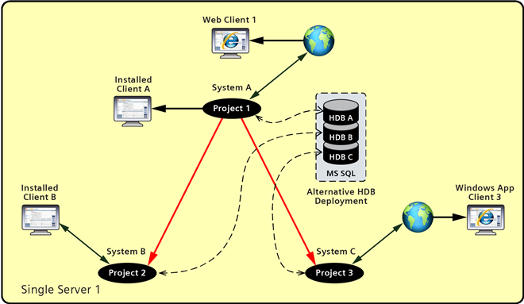

Hierarchical Distributed Systems on a Single Server
Typically you configure the Hierarchical Distributed Systems on separate Servers. However, you can also setup a Hierarchical distributed system where the multiple Local Systems are hosted on a single powerful Server computer.
When you set the systems (projects) in on a single Server in the Hierarchical distribution, the projects can have different Security configurations. For example, you can set the Stand–alone project in distribution with Secured project. When you use a local Desigo CC client for accessing the projects in distribution, it is recommended to configure the Standalone projects in distribution. However, if you have an FEP on a remote server linked to one of the projects you must configure the projects with secured communication in distribution.
The SQL Server is typically on the same Server as that of the projects. The SQL Server typically has one SQL instance with multiple HDBs, where each HDB is linked to one project.
Using the Global User, when you log onto the installed client or Windows App client of the Supervising Local System, you can work with all the linked Supervised systems on that Server. However, when you log onto the installed client connected to one of the Supervised Local System, you can only work with the Local system. You can neither see the data of the Supervising Local system nor of any sibling Supervised Local System.
All Local Systems (projects) are running on the single server. Thus, when the server is down all the connected Local Systems are also down. Thus all field devices connected to the server which is down will be not reachable from any Local System in distribution.
Deployment Diagram
